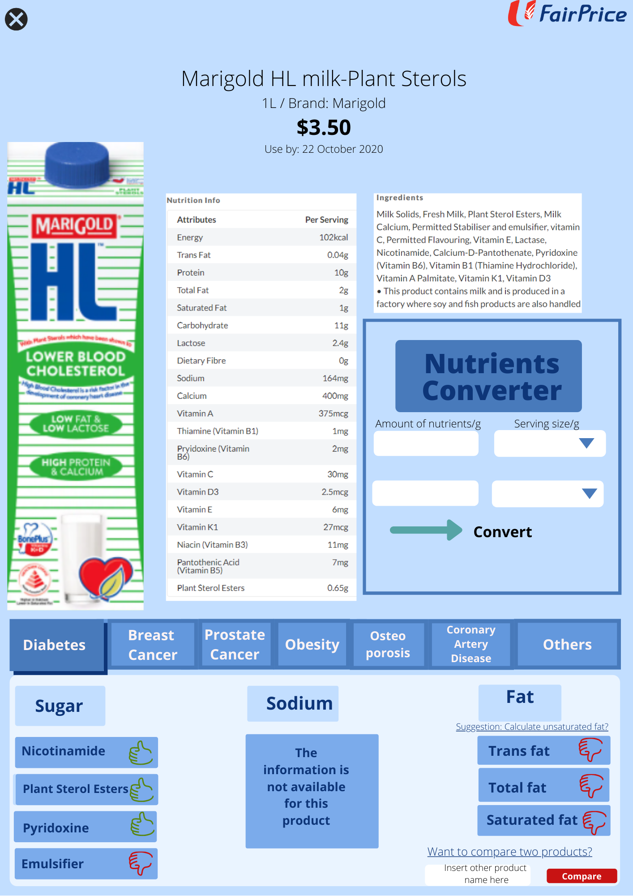

To Second Page

Function:
×
Upon filling in the amount of nutrients and serving size in grams in the respective white blanks, the converter will automatically calculate and output the amount of nutrients per 100 grams, which is the standard serving size for food products.